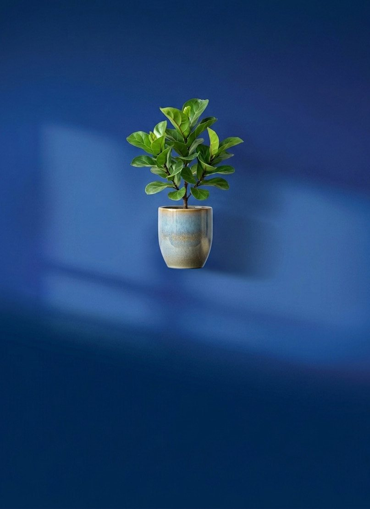
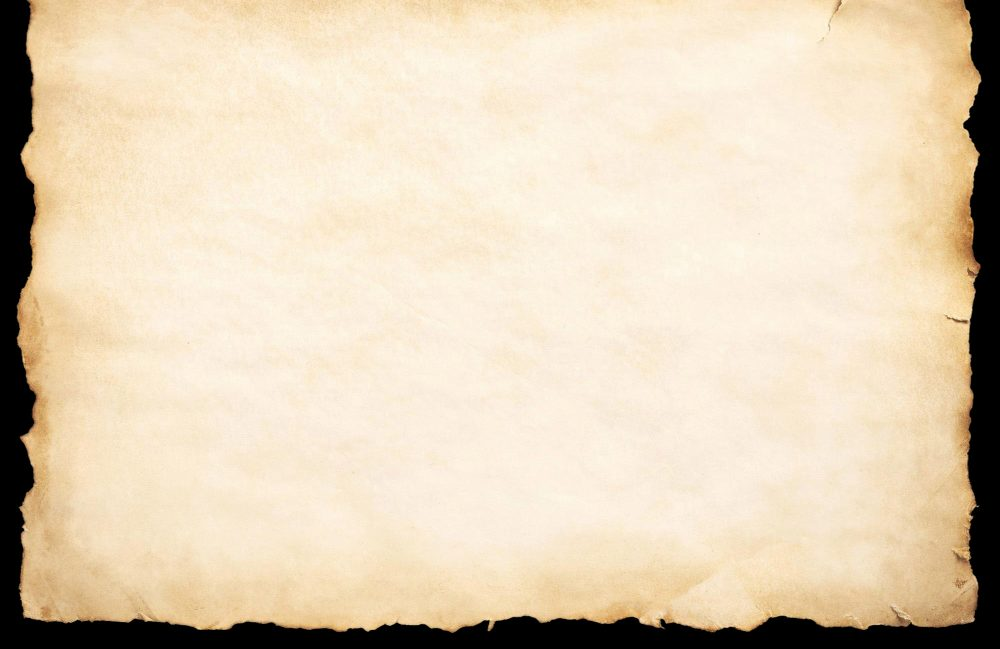
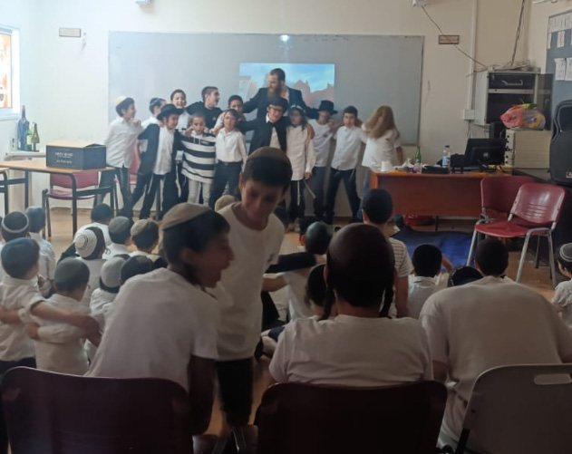
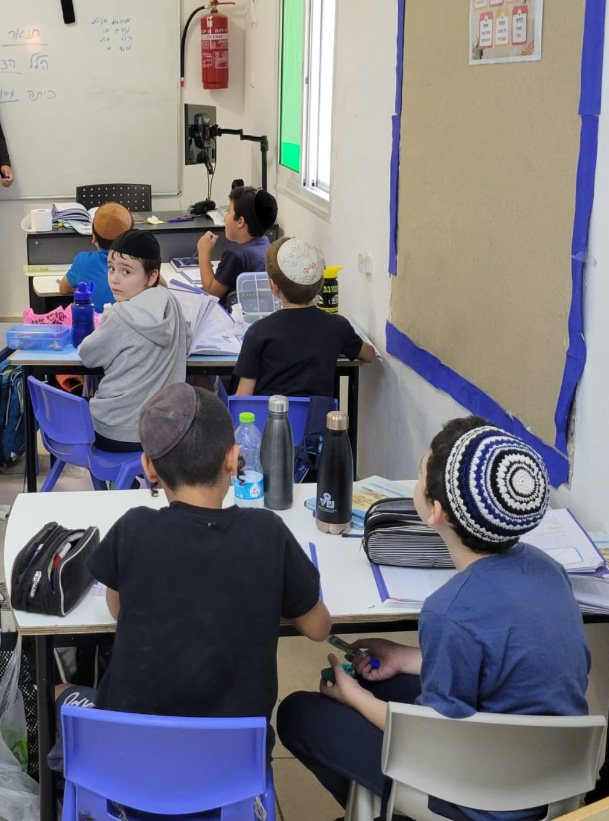
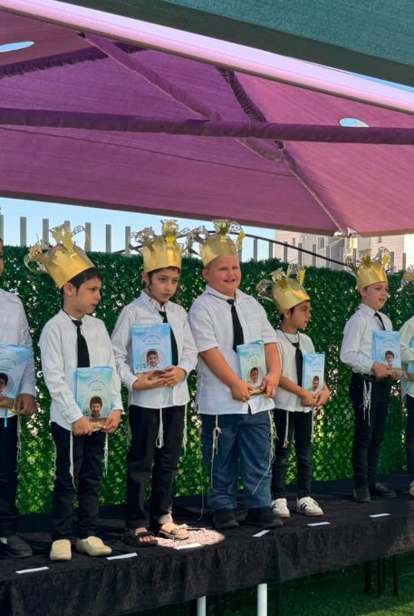
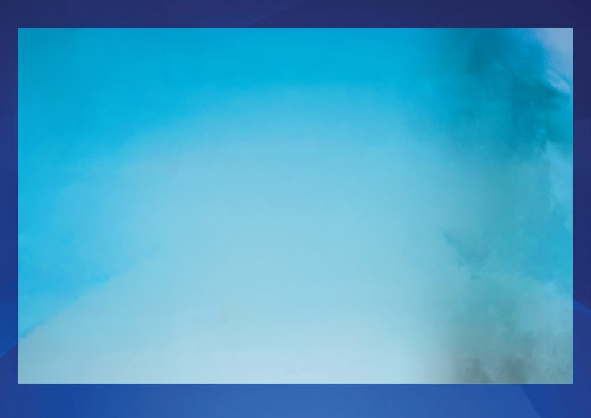

חמש שנים של בנייה, השקעה וצמיחה בבית החינוך חב"ד עפולה — הסיפור, האור והמספרים שמאחורי המפעל.

"באופן עבודת הרשת, הנה כבר כתבתי כמה וכמה פעמים, ובכל זאת, לחשיבות העניין הנני כופל עוד הפעם, אשר תמיהני ביותר על יחס כמה מהמורים לעבודת הרשת, וגם חלק ממורי אנ"ש וגם הוא בכלל, שמביטים על זה כעל משרה שהם עובדים אצל אחרים, ובמילא באים אליהם בטענות.
"ואם אין שמים לב להטענות למלאות אותם במילואם, הרי המסקנה הראשונה היא שצריך לחפש משרה אחרת כי מה נפקא מינה לו באיזה אופן יקבל פרנסתו ופרנסת בני ביתו שי'. והנה כל גישה זו מופרכת היא מעיקרא.
הבעל הבית של הרשת הוא כבוד קדושת מורי וחמי אדמו"ר זצוקללה"ה נבג"מ זי"ע, אשר שמו נושאים המוסדות. ומובן אשר כל אלו שהשם יתברך הצליחם והעמידם על חלק היפה, להשתתף במוסד זה, הרי זהו השער וצנור דרך בו נמשכים ההמשכות – שלו ושל בני ביתו שיחיו – הן ברוחניות והן בגשמיות.
אלא, שכמו בכל דבר יש בעולם כאן חילוק תפקידים, שאלו שזכו ביותר הרי תפקידם הוא העיקר שבהמוסד היינו החינוך בפועל, מה שאין כן אחרים – אינם אלא מנהלים, תמכין דאורייתא וכו' וכו'. ומובן אשר אחרי הנחה זו – הרי זה מעורר תמיהה ופליאה, שבר-שכל שזכה והצליח בחלק הנ"ל בא להמנהל ואומר לו: שמעני, הנני עושה לך טובה במה שמשתתף הנני בכאן, ובמילא אם תמלא את כל תביעותי טוב, ובאם לא אעזוב את המוסד כו'! והאריכות זה אך למותר.
ואם היתה הנחה הנ"ל אצל המורים מאנ"ש, הרי גם בדרך ממילא, ונוסף על זה על ידי השתדלות, היתה נחדרת באלו המורים והמורות אשר, לעת עתה, אינם מאנ"ש, ובמילא היתה עבודתם על דרך המבואר בהמשך רס"ו בעבודת עבד נאמן, שאפילו כשעובד רק בקבלת עול פשוטה, בכל זה מהדר לא רק במילוי עבודתו אלא גם בההידור.
ופשיטא, אשר מי שיש לו אוצר גדול לא יבוא לאחרים לאמר, אם תמלא משאלותי אשתמש בהאוצר, ואם לאו – אשליך האוצר חוצה ואסובב בשוקים וברחובות בעד אגורת כסף. וכנ"ל, ודי למבין.
בבית חינוך חב"ד בולט השינוי המתרחש לא רק אצל התלמידים - בזמן שהותם בתלמוד תורה, לא רק אצל התלמידים - בזמן שהותם בבית, אלא בעיקר האור שהתלמידים מאירים בביתם.
במשך חמש שנים הנהלת בית חינוך חב"ד מחזיקה ומגייסת כספים עבור ההוצאות האדירות שהמוסד דורש — כדי שהצמיחה הזו תמשיך.



לקראת ערב הרתימה והשותפות, אנחנו מספקים הצצה אל המספרים שגורמים לכל המפעל הזה להצליח. לצמוח.
ידוע פתגם בעל ההילולא שאמר על תלמידיו, אשר תפקידם הוא להיות "נרות להאיר". דברי צדיקים בכלל, ודברי נשיאי ישראל לגבי תלמידיהם והמקושרים אליהם - מדוייקים המה, ובפרטיהם גם כן. וגם בהתואר "נרות להאיר" - כן הוא, אשר מורה דרך הוא למקושריו בכמה וכמה ענינים עקריים.
כמה תכונות בנר המאיר: הנר עצמו הוא מקור לאור - מאור, אף כי זעיר אנפין.
כלול הנר משמן ופתילה - וענינם במשל: שמן - תורה ומצות. פתילה - האדם, היינו הגוף, יותר נכון חלק נשמתו נפש דאיהי שתופא דגופא, ובפנימיות יותר - נפש האלקית המלובשת בנפש הבהמית.
כשמדליקין הפתילה היא והשמן מתאחדין זו עם זה, מאיר הנר בהרבה מאורות. . .
ומעלה יתירה באור הנר, אשר דוקא הוא יפה לבדיקה וחיפוש במחבואות בחורים וסדקים - חופש הוא כל חדרי בטן.
כל ענינים אלו בהנמשל - מובנים ומבוארים הם למדי.

הנה כמה סיפורים מהשטח הממחישים זאת:
לכבוד ידידי חב"ד עפולה,
מוקירי מוסדות החינוך ומפעל השליחות
וחברי הקהילה
הננו בזה להזמינכם
לביסוס והרחבת בית החינוך
מצפים מאוד לראותך!
"כאשר יהודי לוקח על עצמו התחייבות לצדקה [פלעדזש] אע"פ שלעת-עתה אינו רואה כיצד יוכל לעמוד בכך ואעפ"כ עושה זאת בלב שמח - הנה מיד כשמחליט ליתן נדבתו, פותחים לו מלמעלה צינורות [טשענעלס] חדשים ואפשרויות חדשות בענייני פרנסה שיוכל לשלם נדבתו"